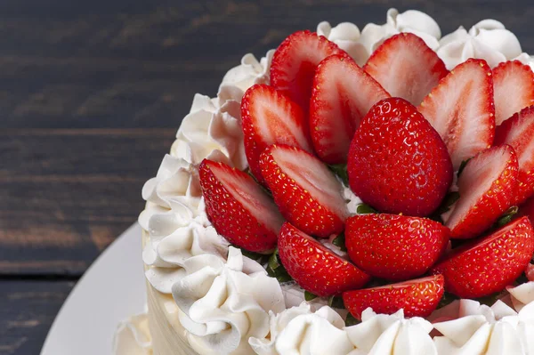
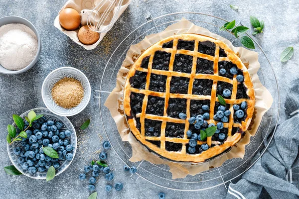

Ingredientes: 2 xícaras de fubá 1 xícara de açúcar 1/2 xícara de manteiga (ou margarina) amolecida 3 ovos 1 ½ xícara de leite 1 colher de sopa de fermento em pó 1 colher de chá de essência de baunilha 1 pitada de sal
Pré-aqueça o forno a 180°C e unte uma forma com manteiga e fubá. Misture manteiga e açúcar até formar um creme claro. Adicione os ovos um a um, batendo bem. Incorpore leite e essência de baunilha. Em outra tigela, misture fubá, fermento e sal. Adicione à mistura líquida até ficar homogêneo. Despeje na forma e asse por 40 min ou até o palito sair limpo.
2 cenouras médias (cortadas em rodelas) 1 xícara de açúcar 1/2 xícara de óleo 3 ovos 2 xícaras de farinha de trigo 1 colher de sopa de fermento em pó
Pré-aqueça o forno a 180°C. Bata cenouras, açúcar, óleo e ovos no liquidificador até ficar homogêneo. Misture a farinha e o fermento em uma tigela. Incorpore a mistura do liquidificador aos secos, mexendo delicadamente. Unte uma forma, despeje a massa e asse por cerca de 40 minutos ou até o palito sair limpo. Deixe esfriar antes de desenformar.
1 xícara de açúcar 1/2 xícara de óleo 3 ovos 1 xícara de leite (ou leite vegetal) 1 xícara de chocolate em pó 2 xícaras de farinha de trigo 1 colher de sopa de fermento em pó
Pré-aqueça o forno a 180°C. Bata açúcar, óleo, ovos e leite no liquidificador até misturar. Misture chocolate em pó, farinha e fermento em uma tigela. Incorpore a mistura líquida aos secos, mexendo delicadamente. Unte uma forma, despeje a massa e asse por cerca de 30 minutos ou até o palito sair limpo. Deixe esfriar antes de desenformar.
Ingredientes: 2 laranjas (suco e raspas) 1 xícara de açúcar 1/2 xícara de óleo 3 ovos 2 xícaras de farinha de trigo 1 colher de sopa de fermento em pó
Pré-aqueça o forno a 180°C. Bata no liquidificador o suco de laranja, açúcar, óleo e ovos até misturar. Em uma tigela, misture a farinha e o fermento. Incorpore a mistura líquida aos secos, mexendo delicadamente. Unte uma forma, despeje a massa e asse por cerca de 35 minutos ou até o palito sair limpo. Deixe esfriar antes de desenformar.
Ingredientes: Para o bolo: 2 xícaras de farinha de trigo 1 ½ xícara de açúcar 1/2 xícara de óleo 1 xícara de leite 3 ovos 1 colher de sopa de fermento em pó 1 colher de chá de essência de baunilha
Pré-aqueça o forno a 180°C. Massa: Bata ovos, açúcar e óleo até formar um creme. Adicione leite e baunilha, misturando bem. Incorpore farinha e fermento. Asse: Unte duas formas redondas, divida a massa e asse por 30 minutos, ou até o palito sair limpo. Chantilly: Bata creme de leite, açúcar de confeiteiro e baunilha até formar picos firmes. Montagem: Desenforme os bolos, coloque chantilly entre as camadas, cubra o bolo e decore com frutas.
Ingredientes: Para o bolo: 1 ½ xícara de açúcar 1/2 xícara de óleo 3 ovos 1 xícara de leite (ou leite vegetal) 1 xícara de chocolate em pó 2 xícaras de farinha de trigo 1 colher de sopa de fermento em pó Para o brigadeiro: 1 lata de leite condensado 7 colheres de sopa de chocolate em pó 1 colher de sopa de manteiga Chocolate granulado para decorar
Pré-aqueça o forno a 180°C. Massa: Bata no liquidificador açúcar, óleo, ovos e leite. Em uma tigela, misture chocolate em pó, farinha e fermento. Incorpore as misturas. Asse: Despeje na forma untada e asse por 30 minutos, ou até o palito sair limpo. Brigadeiro: Cozinhe leite condensado, chocolate em pó e manteiga em fogo médio até desgrudar do fundo. Montagem: Desenforme o bolo, cubra com brigadeiro e decore com chocolate granulado.
Ingredientes: Para o bolo: 2 xícaras de farinha de trigo (ou farinha sem glúten) 1 ½ xícara de açúcar 1 xícara de manteiga (ou margarina) 4 ovos 1 xícara de leite 1 colher de sopa de fermento em pó 1 colher de chá de essência de baunilha 1 xícara de morangos picados (frescos ou congelados) Para a cobertura: 1 ½ xícara de creme de leite fresco 2 colheres de sopa de açúcar de confeiteiro 1 colher de chá de essência de baunilha Morangos inteiros para decorar
Pré-aqueça o forno a 180°C. Massa: Bata manteiga e açúcar até claro. Adicione ovos, leite e baunilha. Misture farinha e fermento. Incorpore morangos picados. Asse: Despeje na forma untada e asse por 40 minutos. Deixe esfriar por 10 minutos antes de desenformar. Cobertura: Bata creme de leite com açúcar de confeiteiro e baunilha até picos firmes. Montagem: Cubra o bolo com chantilly e decore com morangos inteiros.
Ingredientes: Para o bolo: 2 xícaras de farinha de trigo 1 ½ xícara de açúcar 1 xícara de manteiga (ou margarina) 4 ovos 1 xícara de leite 1 colher de sopa de fermento em pó 1 colher de chá de essência de baunilha Para o fondant: 500 g de açúcar de confeiteiro 50 g de gelatina em pó 1/4 xícara de água 1 colher de sopa de glicose Corante alimentício (opcional)
Pré-aqueça o forno a 180°C. Massa: Bata manteiga e açúcar até claro. Adicione os ovos, leite e baunilha. Misture farinha e fermento. Asse em forma untada por 50 minutos. Fondant: Hidrate gelatina, aqueça até dissolver e misture com açúcar de confeiteiro e glicose. Adicione corante, se desejar. Montagem: Desenforme o bolo, cubra com o fondant e alise. Decore a gosto.
Ingredientes: Para o bolo: 2 xícaras de farinha de trigo (ou farinha sem glúten) 1 ½ xícara de açúcar 1 xícara de manteiga (ou margarina) 4 ovos 1 xícara de leite 1 colher de sopa de fermento em pó 1 colher de chá de essência de baunilha Para o recheio de chocolate: 200 g de chocolate meio amargo 1 xícara de creme de leite 2 colheres de sopa de açúcar Para a cobertura: 1 ½ xícara de creme de leite fresco 2 colheres de sopa de açúcar de confeiteiro 1 colher de chá de essência de baunilha Confeitos ou frutas para decorar
Massa: Bata manteiga e açúcar até claro. Adicione os ovos, leite e baunilha. Misture a farinha e o fermento. Asse em duas formas untadas a 180°C por 50 minutos. Deixe esfriar. Recheio: Derreta o chocolate. Misture com creme de leite e açúcar até liso. Deixe esfriar. Montagem: Coloque uma camada de bolo, espalhe o recheio e cubra com a outra camada. Cobertura: Bata o creme de leite com açúcar de confeiteiro e baunilha até picos firmes. Cubra o bolo. Decoração: Decore a gosto.
Ingredientes: Base: 200 g de biscoito triturado 100 g de manteiga derretida Recheio: 1 xícara de suco de limão 1 xícara de açúcar 1 lata de creme de leite
Triture os biscoitos e misture com manteiga para formar a base. Pressione a mistura em uma forma e leve ao forno por 10 minutos a 180°C. Misture o suco de limão, açúcar e creme de leite em uma panela e aqueça até espessar. Despeje sobre a base e leve à geladeira por 2 horas. Decore com raspas de limão antes de servir.
Ingredientes: Para a base: 200 g de biscoitos de maisena (ou sem glúten) 100 g de manteiga derretida 2 colheres de sopa de açúcar Para o recheio: 4 bananas maduras 1 lata de leite condensado 1/2 xícara de creme de leite 1 colher de sopa de suco de limão Canela em pó a gosto Para a cobertura: 1 ½ xícara de creme de leite fresco 2 colheres de sopa de açúcar de confeiteiro 1 colher de chá de essência de baunilha Banana fatiada e canela para decorar
Pré-aqueça o forno a 180°C. Base: Triture os biscoitos no processador até virar farofa. Misture com manteiga derretida e açúcar até ficar homogêneo. Pressione no fundo de uma forma de torta e asse por 10 minutos. Reserve para esfriar. Recheio: Amasse as bananas e misture com leite condensado, creme de leite, suco de limão e canela. Despeje sobre a base e leve ao forno por mais 20 minutos, até firmar. Cobertura: Bata creme de leite com açúcar de confeiteiro e essência de baunilha até obter picos firmes. Montagem: Após esfriar, cubra a torta com chantilly e decore com banana fatiada e uma pitada de canela.
Ingredientes: Massa: 2 ½ xícaras de farinha de trigo 1 colher de sopa de açúcar 1/2 xícara de manteiga gelada 1/4 xícara de água gelada Recheio: 4 maçãs descascadas e fatiadas 1/2 xícara de açúcar 1 colher de chá de canela
Prepare a massa misturando todos os ingredientes e formando uma bola. Deixe na geladeira por 30 minutos. Descasque e corte as maçãs em fatias, misturando com açúcar e canela. Coloque as maçãs sobre a massa. Cubra com outra camada de massa ou uma streusel de farinha e manteiga. Asse a 180°C por 40 minutos ou até dourar.
Ingredientes: Para a base: 200 g de biscoitos de maisena (ou sem glúten) 100 g de manteiga derretida 2 colheres de sopa de açúcar Para o recheio: 500 g de morangos frescos, limpos e cortados ao meio 1 lata de leite condensado 1/2 xícara de creme de leite 1 colher de sopa de suco de limão 1 colher de chá de essência de baunilha 1 pacote de gelatina em pó (sabor neutro) Para a cobertura: 1 xícara de chantilly (ou creme de leite fresco batido) Morangos inteiros para decorar Açúcar de confeiteiro para polvilhar (opcional)
Pré-aqueça o forno a 180°C. Base: Triture os biscoitos de maisena até virar farofa. Misture com manteiga derretida e açúcar até homogêneo. Pressione na forma de torta e asse por 10 minutos. Reserve para esfriar. Recheio: Misture leite condensado, creme de leite, suco de limão, essência de baunilha e gelatina dissolvida. Adicione morangos cortados e mexa delicadamente. Despeje sobre a base e leve à geladeira por pelo menos 2 horas, ou até firmar. Cobertura: Bata o chantilly até obter picos firmes. Montagem: Após a torta estar firme, cubra com chantilly e decore com morangos inteiros. Polvilhe açúcar de confeiteiro, se desejar.
Ingredientes: Para a massa: 2 xícaras de farinha de trigo 1/2 xícara de manteiga 1 ovo 1/4 xícara de água gelada 1 colher de chá de sal Para o recheio: 2 xícaras de frango cozido desfiado 1 cebola picada 1 tomate picado 1/2 xícara de milho 1/2 xícara de creme de leite 1 colher de chá de tempero a gosto Sal e pimenta a gosto
Pré-aqueça o forno a 180°C. Massa: Misture farinha, manteiga, ovo, sal e água até formar uma massa homogênea. Deixe descansar por 15 minutos. Recheio: Refogue a cebola, adicione tomate e frango desfiado. Misture milho, creme de leite e tempere a gosto. Montagem: Abra a massa em uma forma de torta, coloque o recheio e cubra com a massa restante. Faça furos na superfície. Asse por cerca de 40 minutos ou até dourar.
Ingredientes: Para a massa: 2 xícaras de farinha de trigo 1/2 xícara de óleo 3 ovos 1/2 colher de chá de sal 1/2 xícara de água gelada Para o recheio: 1 xícara de abobrinha ralada 1 xícara de cenoura ralada 1/2 xícara de queijo ralado 1/2 cebola picada Sal e pimenta a gosto
Pré-aqueça o forno a 180°C. Massa: Misture todos os ingredientes até formar uma massa homogênea. Reserve. Recheio: Refogue a cebola, adicione os legumes e cozinhe até murcharem. Misture o queijo e tempere. Montagem: Despeje metade da massa em uma forma, coloque o recheio e cubra com o restante da massa. Asse por cerca de 35 minutos, ou até dourar.
Ingredientes: Para a massa: 2 xícaras de farinha de trigo 1/2 xícara de manteiga 1 ovo 1/4 xícara de leite 1 colher de chá de sal Para o recheio: 200 g de queijo muçarela ralado 200 g de presunto picado 1/2 xícara de creme de leite Sal e pimenta a gosto
Pré-aqueça o forno a 180°C. Massa: Misture todos os ingredientes até formar uma massa homogênea. Deixe descansar por 10 minutos. Recheio: Misture o queijo, o presunto, o creme de leite, sal e pimenta. Montagem: Abra a massa em uma forma, adicione o recheio e cubra com a massa restante. Faça furos na superfície. Asse por cerca de 30 minutos, ou até dourar.
Ingredientes: Para a massa: 2 xícaras de farinha de trigo 1/2 xícara de óleo 3 ovos 1/2 colher de chá de sal 1/2 xícara de água Para o recheio: 2 latas de atum 1 cebola picada 1 tomate picado 1/2 xícara de azeitonas picadas 1/2 xícara de creme de leite Sal e pimenta a gosto
Pré-aqueça o forno a 180°C. Massa: Misture todos os ingredientes até formar uma massa homogênea. Reserve. Recheio: Refogue a cebola, adicione o tomate e o atum. Misture as azeitonas, o creme de leite e tempere. Montagem: Despeje metade da massa em uma forma, coloque o recheio e cubra com o restante da massa. Asse por cerca de 35 minutos, ou até dourar.